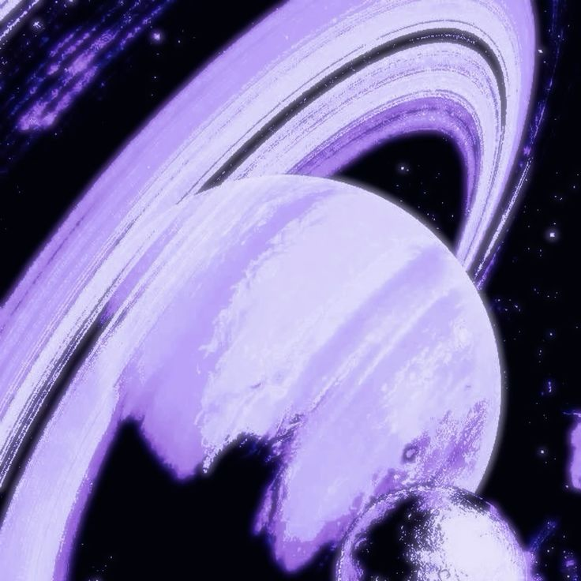
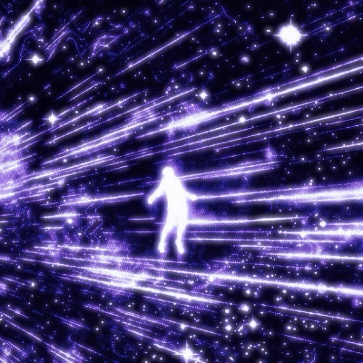
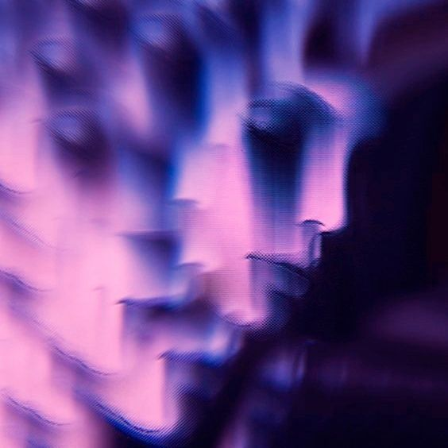

1. Paradoxo no Tempo: Relatividade Restrita
Como o tempo se comporta em diferentes quadros de referência? Explore o
paradoxo dos gêmeos na teoria da relatividade.
2. Superposição Quântica e a Lógica do Impossível
Descubra como partículas podem estar em vários estados ao mesmo tempo — até que
alguém observe.
3. Informação, Entropia e Buracos Negros
Será que a informação se perde para sempre em um buraco negro? Veja o que diz a
física moderna.

4. Causalidade e Viagens no Tempo
Viajar no tempo pode violar a causalidade? Entenda os paradoxos e as soluções
possíveis.
5. Dualidade Onda-Partícula e a Observação
O que realmente é uma partícula? Descubra o papel do observador na física
quântica.

6. Conclusão
Uma reflexão final sobre o papel dos paradoxos na construção do conhecimento
físico.